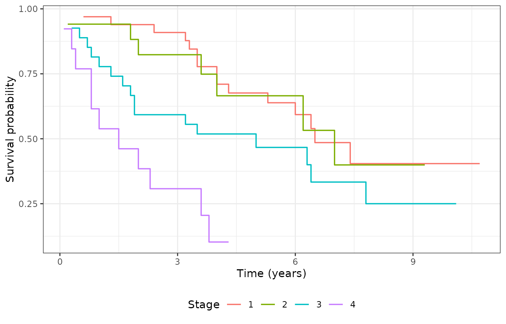
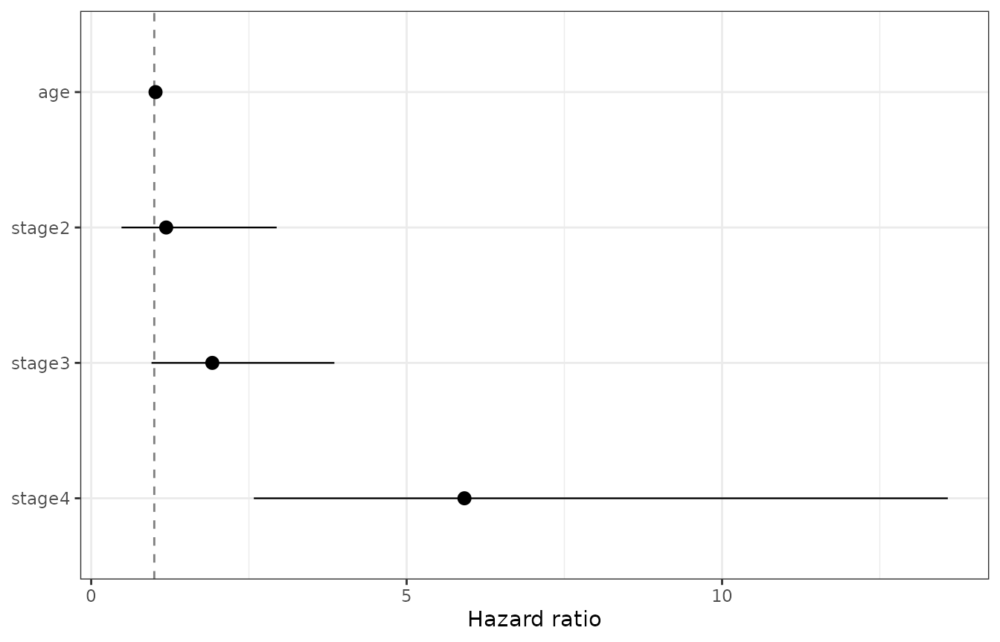

spsurv fits semi-parametric survival regression for right-censored data using Bernstein-polynomial (BP) baselines. Three model families share one interface:
-
PH — proportional hazards (
bpph,model = "ph") -
PO — proportional odds (
bppo,model = "po") -
AFT — accelerated failure time (
bpaft,model = "aft")
Before you model
library(spsurv)
library(KMsurv)
library(survival)
library(ggplot2)
library(generics)
data(larynx)
larynx$stage <- factor(larynx$stage)
censor_tbl <- do.call(rbind, lapply(split(larynx, larynx$stage), function(d) {
data.frame(
stage = as.character(d$stage[1]),
n = nrow(d),
events = sum(d$delta),
censored = sum(1 - d$delta),
stringsAsFactors = FALSE
)
}))
censor_tbl$pct_censored <- round(100 * censor_tbl$censored / censor_tbl$n, 1)
censor_tbl
#> stage n events censored pct_censored
#> 1 1 33 15 18 54.5
#> 2 2 17 7 10 58.8
#> 3 3 27 17 10 37.0
#> 4 4 13 11 2 15.4
km_stage <- survfit(Surv(time, delta) ~ stage, data = larynx)
km_long <- data.frame(
time = km_stage$time,
surv = km_stage$surv,
stage = rep(levels(larynx$stage), km_stage$strata)
)
ggplot(km_long, aes(x = time, y = surv, color = stage)) +
geom_step(linewidth = 0.6) +
labs(x = "Time (years)", y = "Survival probability", color = "Stage") +
theme_bw() +
theme(legend.position = "bottom")
Kaplan-Meier survival by larynx cancer stage.
Fit and summarize
fit <- bpph(
Surv(time, delta) ~ age + stage,
degree = 5,
data = larynx,
approach = "mle",
init = 0
)
summary(fit)
#> Call:
#> bpph(formula = Surv(time, delta) ~ age + stage, degree = 5, data = larynx,
#> approach = "mle", init = 0, model = "ph")
#>
#> Bernstein PH model:
#> Regression coefficients:
#> Estimate 2.5% 97.5% Std. Error z value Pr(>|z|)
#> age 0.0197 -0.0084 0.0478 0.0143 1.4 0.17
#> stage2 0.1729 -0.7325 1.0783 0.4619 0.4 0.71
#> stage3 0.6521 -0.0450 1.3492 0.3557 1.8 0.07 .
#> stage4 1.7777 0.9469 2.6085 0.4239 4.2 3e-05 ***
#> ---
#> Signif. codes: 0 '***' 0.001 '**' 0.01 '*' 0.05 '.' 0.1 ' ' 1
#>
#> Exponentiated coefficients:
#> Estimate 2.5% 97.5%
#> age 1.02 0.99 1.0
#> stage2 1.19 0.48 2.9
#> stage3 1.92 0.96 3.9
#> stage4 5.92 2.58 13.6
#>
#> ---
#> loglik = -141 AIC = 299The generic spbp() function is equivalent when you pass
model explicitly:
The spbp object
names(fit)[names(fit) %in% c("coefficients", "bp.param", "n", "nevent")]
#> [1] "coefficients" "bp.param" "n" "nevent"
fit$call$model
#> [1] "ph"
fit$call$approach
#> [1] "mle"| Component | Meaning |
|---|---|
coefficients |
Regression estimates (on original covariate scale) |
bp.param |
Bernstein baseline coefficients (gamma) |
degree |
Bernstein polynomial degree used in the fit |
bp.param length |
Same as degree
|
call$model |
"ph", "po", or "aft"
|
call$approach |
"mle" or "bayes"
|
Visual check — forest plot
td <- tidy(fit, conf.int = TRUE, exponentiate = TRUE)
td$term <- factor(td$term, levels = rev(td$term))
ggplot(td, aes(x = estimate, y = term, xmin = conf.low, xmax = conf.high)) +
geom_vline(xintercept = 1, linetype = "dashed", color = "grey50") +
geom_pointrange(linewidth = 0.4) +
labs(x = "Hazard ratio", y = NULL) +
theme_bw()
Exponentiated coefficients (hazard ratios) with 95% CIs.
Printing
print(fit, what = "summary")
#> Call:
#> bpph(formula = Surv(time, delta) ~ age + stage, degree = 5, data = larynx,
#> approach = "mle", init = 0, model = "ph")
#>
#> Bernstein PH model:
#> Regression coefficients:
#> Estimate 2.5% 97.5% Std. Error z value Pr(>|z|)
#> age 0.0197 -0.0084 0.0478 0.0143 1.4 0.17
#> stage2 0.1729 -0.7325 1.0783 0.4619 0.4 0.71
#> stage3 0.6521 -0.0450 1.3492 0.3557 1.8 0.07 .
#> stage4 1.7777 0.9469 2.6085 0.4239 4.2 3e-05 ***
#> ---
#> Signif. codes: 0 '***' 0.001 '**' 0.01 '*' 0.05 '.' 0.1 ' ' 1
#>
#> Exponentiated coefficients:
#> Estimate 2.5% 97.5%
#> age 1.02 0.99 1.0
#> stage2 1.19 0.48 2.9
#> stage3 1.92 0.96 3.9
#> stage4 5.92 2.58 13.6
#>
#> ---
#> loglik = -141 AIC = 299